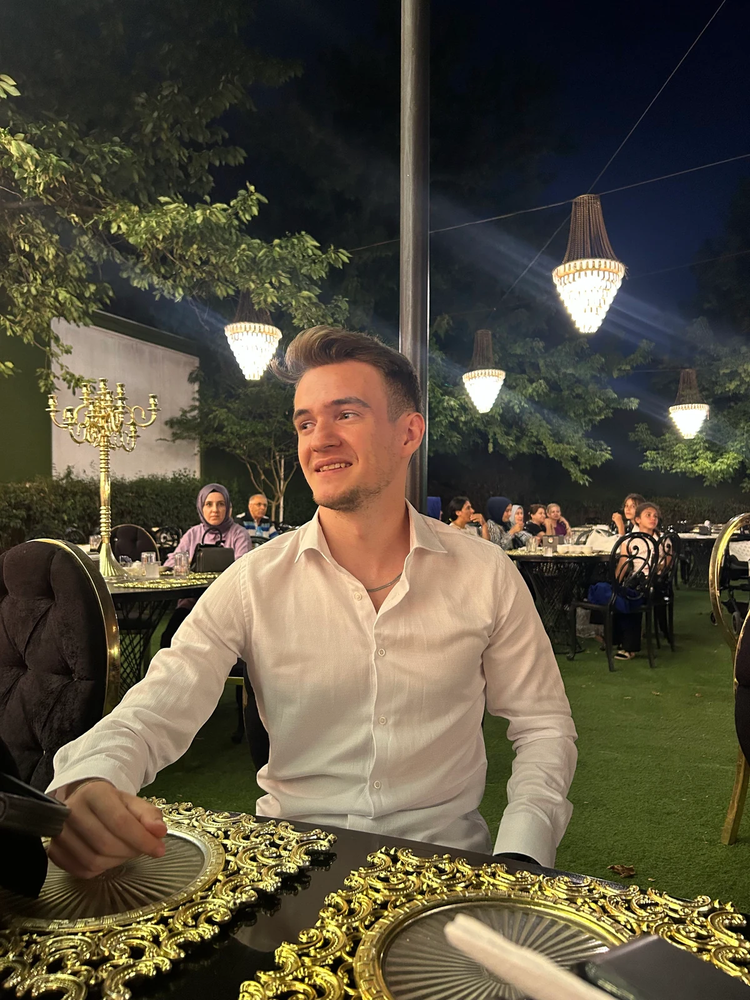
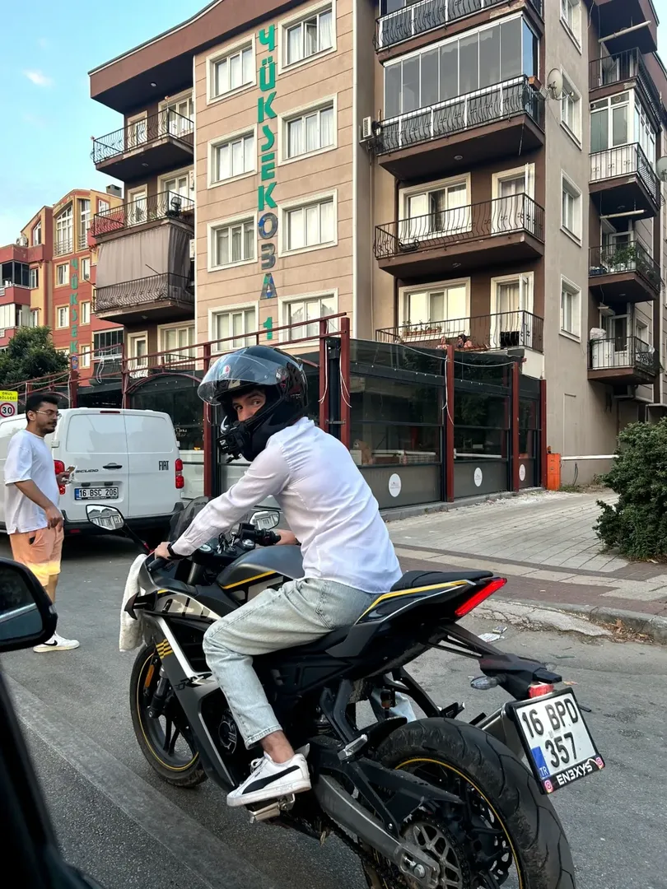

Enes Çetin
Geliştirme Yolculuğum
2003 senesinde Bursa'da doğdum. Sürekli kurcalama ve keşfetme merakım sayesinde henüz 8 yaşındayken Visual Basic ile tanıştım ve ilk hesap makinesi programımı yazdım. O an başlayan heyecan, zamanla profesyonel bir yazılım tutkusuna dönüştü.
Lise yıllarımda Photoshop, Cinema 4D ve C# ile görsel tasarım ve programlama temellerini pekiştirdim. Ardından Unity oyun motoru ile tanışmam kariyer hedefimi kesinleştirdi. Pandemi süreciyle birlikte oyun geliştirme ve mobil mimarilere tam odaklanarak projeler üretmeye başladım.
Akademik tarafta DGS 2024 sayısal alanda Türkiye 261.'si olarak lisans eğitimime Bursa Teknik Üniversitesi Bilgisayar Mühendisliği bölümünde devam ediyorum. Hem mobil ekosistemde hem de Steam platformunda yeni nesil oyunlar ve yazılımlar üretmeyi sürdürüyorum.
İlgi & Odak Alanlarım
Cross-Platform Mobil
React Native ve TypeScript ile modern, performanslı ve kullanıcı dostu mobil ürünler inşa etmek.
Oyun Geliştirme & Unity
C# ve Unity altyapısıyla mobil oyunlardan Steam'e uzanan eğlenceli ve derin mekanikli simülasyonlar tasarlamak.
Merak ve İnovasyon
Görsel tasarımdan 3D araçlara, yeni dillerden deneysel fikirlere; merak uyandıran her alanda kurcalayıp üretmek.
Kod Dışında & Yaşam

